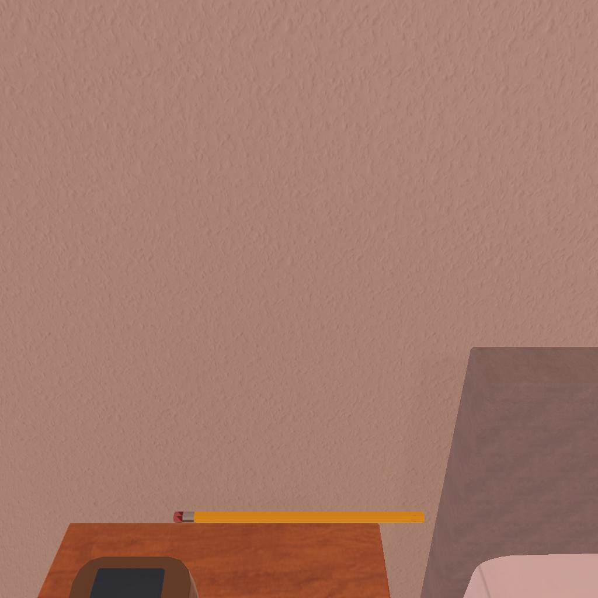

---------------------------------------------------------task: 2---------------------------------------------------------
--------------------------------------------------------------------------------------------------------------------------------------------------------------------
--------------------------------------------------------------------------------------------------------------------------------------------------------------------
Step:--------------------------------------------------------------------------4-------------------------------------------------------------------------------
----------------------------------------
VLM Prompt:
Image1:
Image2:
Image3:
**Instruction**
1. Analyze the provided images to identify all visible household objects and compare the difference between images (e.h. whether the object is opened or not and taken on hand or not), focusing on those relevant to the task description "examine the pen with the desklamp."
2. Use the analysis of images and the task hint "The agent must find an object of the desired type, locate and turn on a light source with the desired object in-hand." to answer the question: what is the most reasonable action in the choices for the task description "examine the pen with the desklamp"?
3. Decide and write the answer using the template: The answer is: (i): , where i is the real number. If there is no desired object in images, search every place based on **Initial Observation** to find the object. And if no one is exactly correct, choose a similar answer.
**Initial Observation**
You are in the middle of a room. Looking quickly around you, you can see bed (1-2), dresser (1), drawer (1-11), sidetable (1-2), desk (1), garbagecan (1), safe (1)
**Answer Choices**
(1): go to bed 1
(2): go to dresser 1
(3): go to bed 2
(4): go to drawer 1
(5): go to drawer 2
(6): go to sidetable 2
(7): go to drawer 3
(8): go to drawer 4
(9): go to desk 1
(10): go to garbagecan 1
(11): go to drawer 5
(12): go to drawer 6
(13): go to drawer 7
(14): go to drawer 8
(15): go to drawer 9
(16): go to drawer 10
(17): go to drawer 11
(18): go to safe 1
(19): put pencil 1 in/on sidetable 1
(20): examine pencil 1
(21): examine sidetable 1
**Answer**
Let's think step by step by following the instructions.
----------------------------------------
----------------------------------------
Original Response:
Image Analysis:
- In all three images, a pencil (referred to as a pen in the task description) is visible on the desk.
- There is no desklamp visible in any of the images.
- The pencil remains in the same position in images 1 and 2, but image 3 is taken from a different angle, showing the pencil from above.
Task Hint Analysis:
- The task requires the agent to find a desklamp to examine the pencil with it.
- The agent needs to locate and turn on a light source, presumably the desklamp, while holding the pencil.
Given the task description "examine the pen with the desklamp" and the hint provided, the most reasonable action would be to first locate the desklamp. Since the desklamp is not visible in any of the images, the agent must search the room to find it.
Based on the **Initial Observation**, the most likely places a desklamp could be located are on or near the desk or the sidetables, as these are common locations for desklamps in a room. The agent is already at the desk where the pencil is located, so the next logical step would be to check the sidetables for a desklamp.
The answer is: (6): go to sidetable 2.
----------------------------------------
----------------------------------------
>>> Refine Original VLM Response and Get Pure Action: go to sidetable 2
----------------------------------------
-----------------------------------------------------------------
Running time: 23.607567071914673 seconds
Total Money: 0.82774
-----------------------------------------------------------------
-----------------------------------------------------------------
Text Observation:You arrive at loc 6. On the sidetable 2, you see a pillow 1, a desklamp 1, a keychain 1, a pencil 2, and a creditcard 1.
-----------------------------------------------------------------
UNSUCCEED